Lab 1 - Proactive Outbound Reach 📞¶
Lab Purpose¶
Proactive outbound communication is a key pillar of modern customer engagement. Rather than waiting for customers to call in, organisations can leverage Webex Contact Center Campaign Manager to initiate timely, context-rich outbound calls — automatically, at scale, and in full compliance with regulatory requirements.
In this lab, you will configure an end-to-end outbound IVR campaign using Webex Campaign Management. This includes setting up the necessary WxCC infrastructure (agents, teams, queues, flows, entry points) and then configuring all Campaign Manager prerequisites before launching a live Progressive IVR campaign targeting a debt collection use case.
Lab Objectives
By the end of this lab, you will have configured the full stack required to run an outbound IVR campaign in Webex Contact Center. Key objectives include:
- WxCC Infrastructure Setup: Configure agents, teams, outdial queues, global variables, and entry points on Control Hub.
- Flow Design: Build an outbound campaign flow with CPA-based routing and event flows, including Answer Machine Detection (AMD) and Live Voice handling.
- Campaign Manager Configuration: Complete all prerequisite campaign administration settings including business days, contact modes, field mappings, suppression rules, and telephony outcomes.
- Campaign Activation: Create a campaign group, configure and activate the campaign, and upload a contact list to trigger live calls.
Lab Outcome
By the end of Lab 1, you will have a fully operational outbound IVR campaign that:
- Dials contacts from an uploaded CSV contact list using Progressive IVR mode.
- Detects call outcomes (AMD, Abandoned, Live Voice) and routes them appropriately.
- Plays a congratulatory message ("Congratulations, you have completed Lab 1") to live voice contacts — confirming the end-to-end campaign flow is working.
- Passes customer data (first name, last name) as global variables to the destination flow, ready for Lab 2's AI Agent integration.
Pre-requisites¶
In order to complete this lab, you must have:
- Access to Webex Control Hub with Full Admin permissions
- A Webex Contact Center tenant provisioned and licensed
- Access to the Webex Campaign Management portal
Lab Overview 📌¶
The diagram below illustrates the high-level architecture and the sequence of configuration steps you will follow throughout this lab:
{kind=link}
In this lab you will perform the following tasks:
- Configure a team
- Create an Outdial Queue
- Configure Global Variables and Wrap-up Codes
- Build the Outbound Campaign Flow (Main + Event flows)
- Create the Outdial Entry Point (Channel) and Outdial ANI
- Configure Business Hours
- Complete Campaign Manager prerequisites
- Create, activate, and upload contacts to the Campaign
Lab 1.1 - Configure a Team¶
Create a Team¶
Even we won't use any agent to run the IVR campaign, the creation of a team or agent to assign to an outdial queue is mandatory. The Entry Point need to have that queue associated.
Create Team
- In Control Hub, navigate to Contact Center → Teams.
-
Click Create a team and fill in the following:
Field Value Name Bootcamp_TeamParent site Site-1Team type Agent-basedMultimedia profile Default_Multimedia_ProfileDesktop layout Global Layout -
Click Create.
{kind=link}
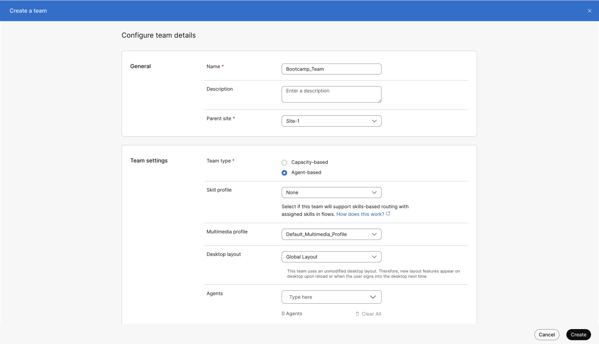
Lab 1.2 - Create an Outdial Queue¶
The outdial queue is what connects your outbound campaign to the agent pool. It must be set to Outbound queue type and have the Outbound campaign toggle enabled.
Create Outdial Queue
- In Control Hub, navigate to Contact Center → Queues.
-
Click Create a queue and configure:
Field Value Name Bootcamp_OutVoiceQueueContact direction Outbound queueChannel type TelephonyOutbound campaign Enabled (toggle ON) Agent assignment Teams→ selectBootcamp_Team -
Under Call distribution, click Create a group, expand it, and select
Bootcamp_Team. - Click Create.
{kind=link}
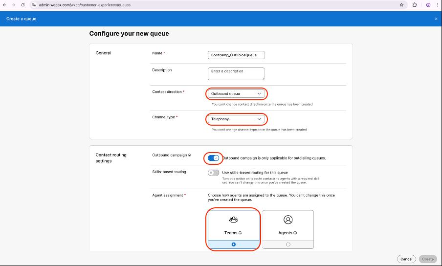
Note
The Contact direction and Channel type fields cannot be changed after the queue is created. Double-check these values before clicking Create.
After saving, add the call distribution group:
{kind=link}
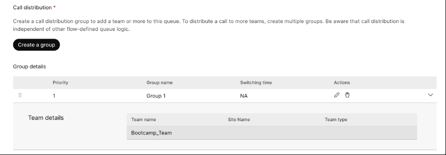
Lab 1.3 - Configure Global Variables and Wrap-up Codes¶
Create Global Variables¶
Global Variables are used to carry customer data (from the contact list) through the campaign flow and display it on the Agent Desktop. You must create two variables: firstName and lastName.
Create Global Variables
- In Control Hub, navigate to Contact Center → Flows → Global Variables.
-
Click Create a global variable and configure the firstName variable:
Field Value Name firstNameDescription firstNameVariable type StringMake reportable Enabled Make agent viewable Enabled Desktop label First NameEdit on desktop Disabled -
Click Create.
- Repeat the process to create the lastName variable with the Desktop label
Last Name.
{kind=link}
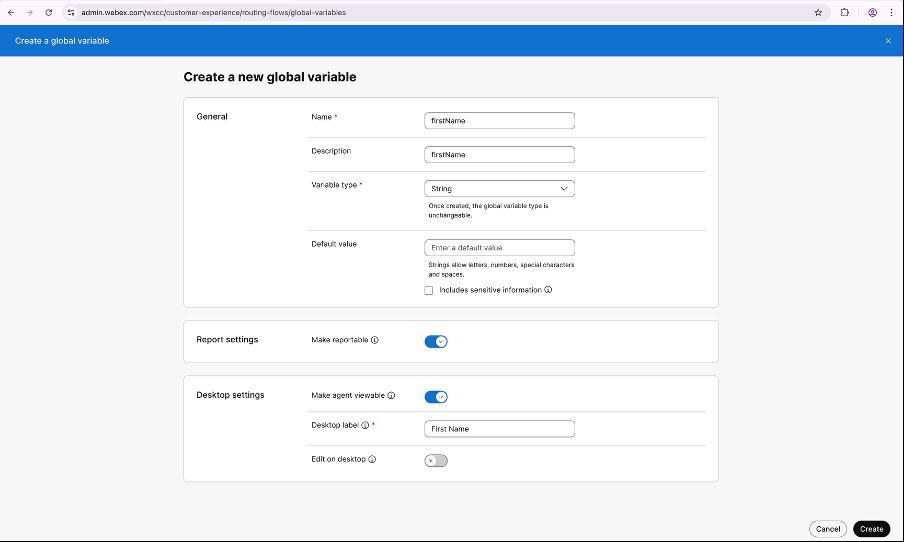
Important
Both firstName and lastName must be added to all flows in this lab — both the dummy test flow and the outbound campaign flow — under Global Flow Properties → Global Variables.
Create a Wrap-up Code¶
A wrap-up code is required by Campaign Manager when configuring the contact attempt strategy.
Create Wrap-up Code
- In Control Hub, navigate to Contact Center → Idle/wrap-up codes.
-
Click Create and configure:
Field Value Name debtDescription Debt CollectionMake it default Enabled Code type Default Wrapup Work Type -
Click Save.
{kind=link}
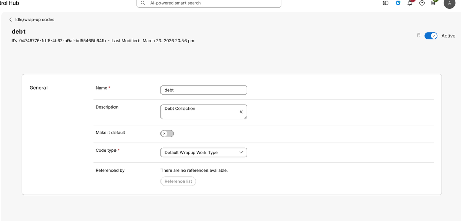
Lab 1.4 - Build the Flows¶
Create the "Lab2" Dummy Test Flow¶
Before building the full outbound campaign flow, create a simple dummy flow to validate the end-to-end campaign configuration. This same flow will be used as the starting point for Lab 2 so name it as AI_Agent_DebtCollection
The flow plays a congratulatory TTS message when a live voice contact is detected, confirming Lab 1 is fully operational.
Create Lab2 dummy flow
- In Control Hub, navigate to Contact Center → Flows.
- Click Create flow and name it
AI_Agent_DebtCollection. - In the Global Flow Properties panel on the right:
- Under Global Variables, click Add global variables and add both
firstNameandlastName.
- Under Global Variables, click Add global variables and add both
- From the Activities Library, drag a Play Message node onto the canvas and connect it to the NewPhoneContact Start node.
- Configure the Play Message node:
- Activity Label:
EndOfLab1 - Enable Text-to-Speech
- Connector:
Cisco Cloud Text-to-Speech - Text-to-Speech Message:
Congratulations, You have completed lab 1
- Activity Label:
- Connect the Play Message node to a End Flow node.
- Publish the flow (select Latest as the version label).
{kind=link}
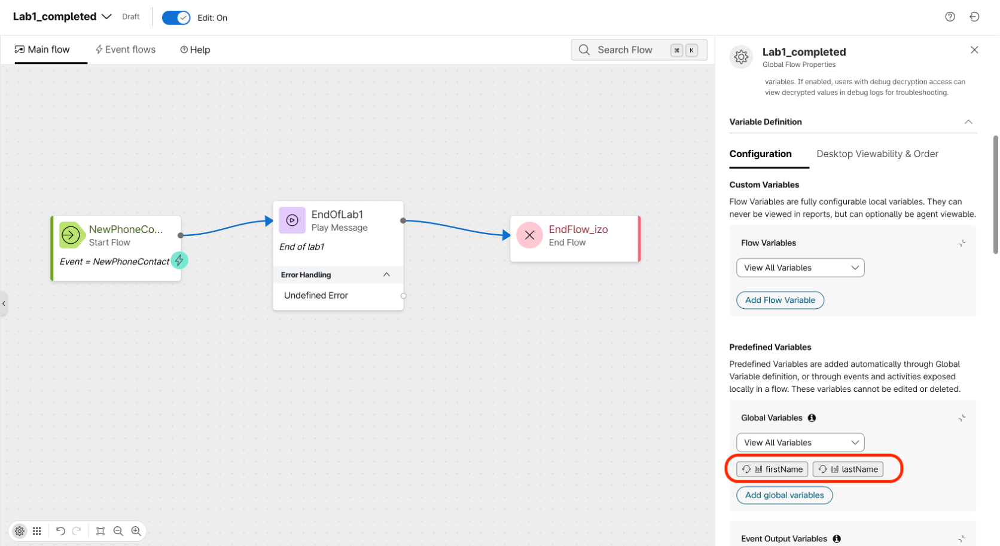
{kind=link}
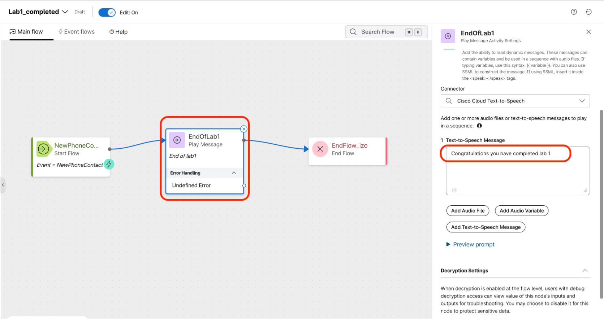
Create the Outbound Campaign Flow¶
Now create the main outbound campaign flow. This flow handles the outbound dialling logic and routes calls based on the CPA (Call Progress Analysis) result.
Create Outbound_DebtCollection Flow
- In Control Hub, navigate to Contact Center → Flows.
- Click Create flow and name it
Outbound_DebtCollection. - In the Global Flow Properties panel:
- Under Global Variables, add both
firstNameandlastName.
- Under Global Variables, add both
- The Main flow canvas starts with a NewPhoneContact Start node. Connect it to an End Flow node as a placeholder — the actual logic is handled in Event flows.
{kind=link}
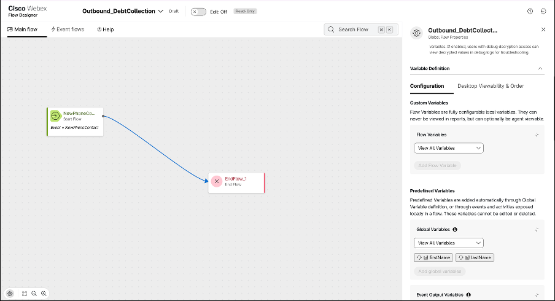
Configure Event Flows¶
The campaign logic is driven by Event flows. Click on Event flows at the top of the flow builder to switch to the event flow canvas. You will configure two key events.
Event 1: OutboundCampaignCallResult
This event fires when the dialler receives a CPA result for an outbound call attempt. It determines whether the call reached an answering machine, was abandoned, or reached a live person.
Configure OutboundCampaignCallResult Event
- On the Event flows canvas, locate the OutboundCampaignCallResult event handler node.
- Drag a Case node onto the canvas and connect the OutboundCampaignCallResult event handler to it.
- Configure the Case node:
- Activity Label:
Campaign_Results - Case variable:
OutboundCampaignCallResult.CPAResult -
Add the following case outputs:
Case Value AMD AMDABANDONED ABANDONEDLIVE_VOICE_IVR_CAM LIVE_VOICE_IVR_CAMDefault (default fallthrough)
- Activity Label:
{kind=link}
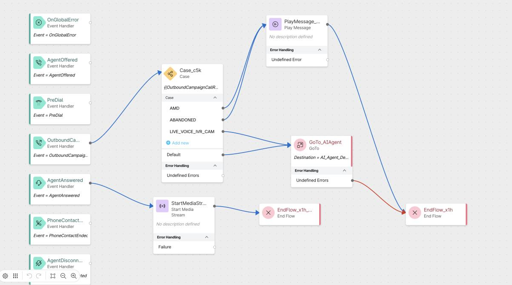
{kind=link}
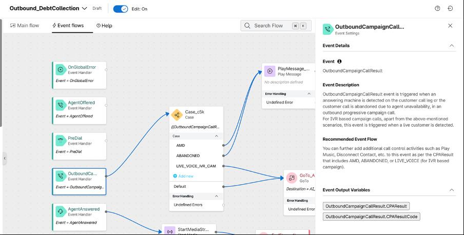
Handling AMD and Abandoned outcomes:
Configure AMD and Abandoned Routing
- Drag a Play Message node onto the canvas.
- Connect both the AMD and ABANDONED outputs of the Case node to this Play Message node.
- Configure the Play Message node:
- Enable Text-to-Speech
- Connector:
Cisco Cloud Text-to-Speech - Text-to-Speech Message:
Goodbye
- Connect the Play Message node to an End Flow node.
{kind=link}
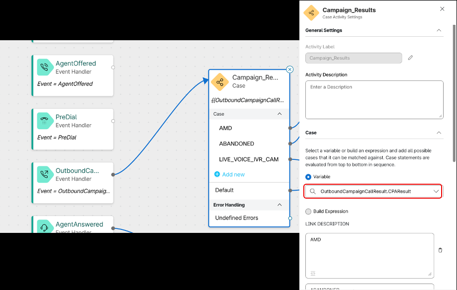
{kind=link}
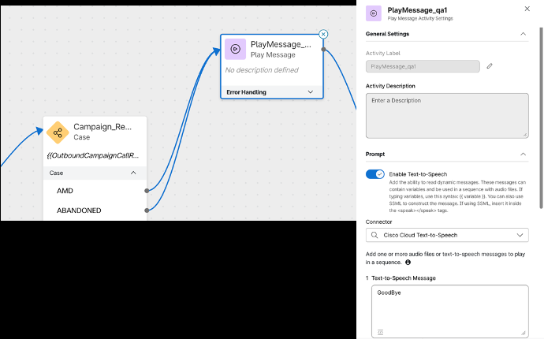
Handling Live Voice (LIVE_VOICE_IVR_CAM) outcome:
Configure Live Voice Routing
- Drag a Go To node onto the canvas.
- Connect the LIVE_VOICE_IVR_CAM output of the Case node to the Go To node.
- Configure the Go To node:
- Activity Label:
GoTo_AIAgent - Flow type:
Static Flow - Flow:
AI_Agent_DebtCollection(this will be used in Lab 2) - Version Label:
Latest
- Activity Label:
-
Under Flow Variable Mapping, map the global variables from the current flow to the destination flow:
Current variable Destination variable firstNamefirstNamelastNamelastName
Important
The Flow Variable Mapping is critical for Lab 2. This ensures that the customer's first and last name (loaded from the campaign contact list) are passed to the destination flow where the AI Agent will use them.
{kind=link}
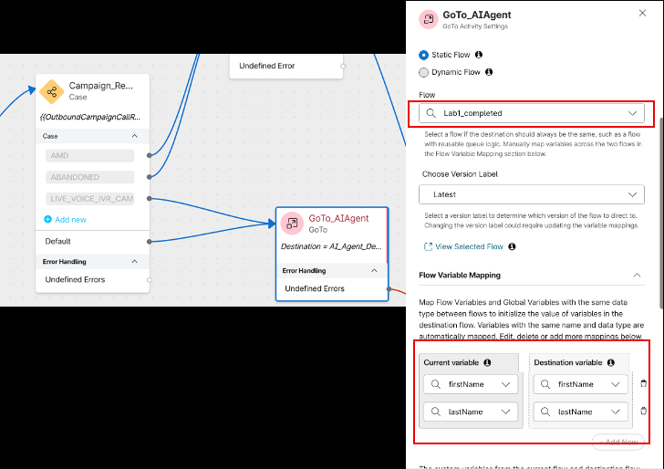
Event 2: AgentAnswered
This event is used to enable AI Assistant features (Agent Answers, Drop Summary) for human-assisted calls.
Configure AgentAnswered Event
- On the Event flows canvas, locate the AgentAnswered event handler.
- Drag a Start Media Stream node onto the canvas and connect it to the AgentAnswered event handler.
- Connect the Start Media Stream node to an End Flow node.
{kind=link}
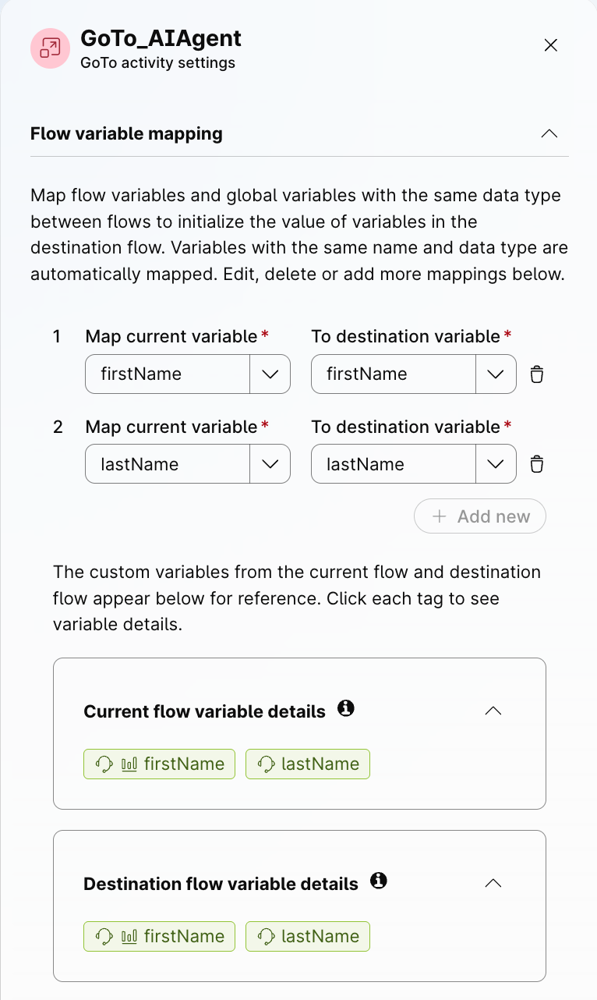
- Click Save and then Publish the
Outbound_DebtCollectionflow.
Lab 1.5 - Create the Outdial Entry Point (Channel) and Outdial ANI¶
Create the Outdial Entry Point¶
The Entry Point (Channel) is the outbound telephony channel that ties together the flow, the outdial queue, and the dialling configuration.
Create Outdial Entry Point
- In Control Hub, navigate to Contact Center → Channels.
-
Click Create a channel and configure:
Field Value Name Campaign_EPChannel type Outbound telephonyService level threshold 30secondsTimezone Europe/London(use your local timezone)Routing flow Outbound_DebtCollectionMusic on hold defaultmusic_on_hold.wavVersion label LatestOutdial queue Bootcamp_OutVoiceQueue -
Click Create.
{kind=link}
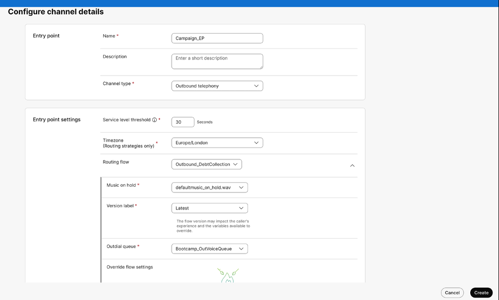
Configure Outdial ANI¶
The Outdial ANI is the caller ID displayed to customers when they receive the outbound call. You can configure multiple ANIs for different regions.
Create Outdial ANI
- In Control Hub, navigate to Contact Center → Outdial ANI.
- Click Create and configure:
- Name:
Bootcamp_outANI
- Name:
-
Under Entry list, click Add More and add your PSTN numbers:
Entry Name Contact number 1 US-DIALOUT+135025021082 PSTN+442046200604 -
Click Save.
{kind=link}
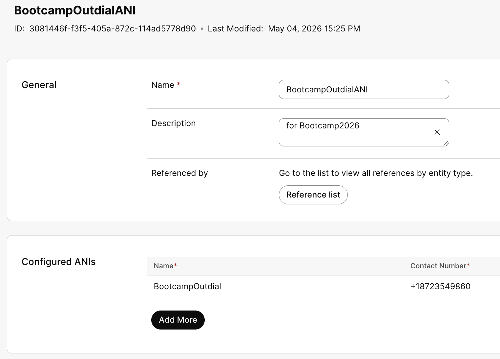
Lab 1.6 - Configure Business Hours¶
Business hours are defined in Control Hub and consumed by Campaign Manager to enforce calling windows. Campaign Manager can only enable or disable the days you define here.
Create Business Hours
- In Control Hub, navigate to Contact Center → Business Hours.
- Click Create and configure:
- Name:
BH_Bootcamp - Timezone:
Europe/London
- Name:
- Click Add shift and configure a shift:
- Shift name:
Shift_bootcamp - Days: Monday, Tuesday, Wednesday, Thursday, Friday
- Time duration:
9:00 AMto9:00 PM
- Shift name:
- Click Save, then click Create to finalise the business hours schedule.
Note
For this lab, we will not configure Holidays or Overrides. The Campaign Manager will use the shift schedule as defined.
{kind=link}
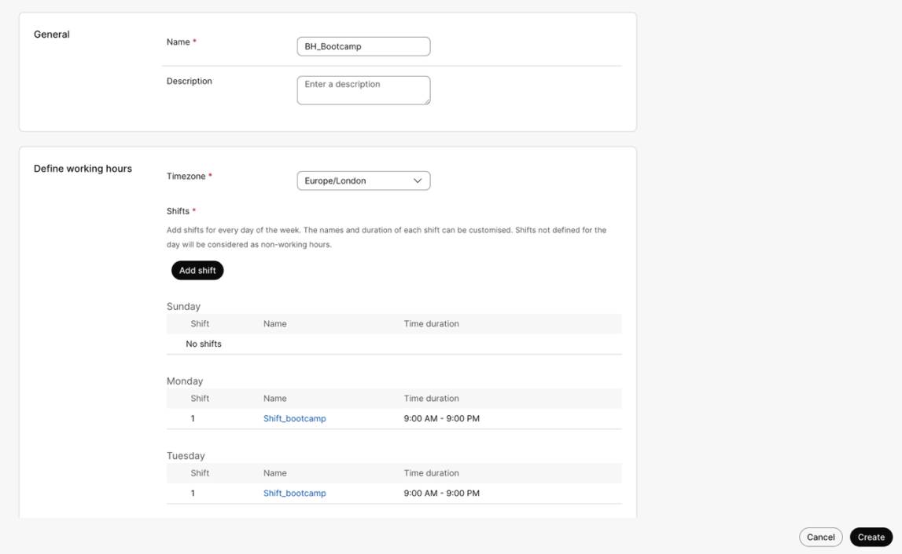
{kind=link}
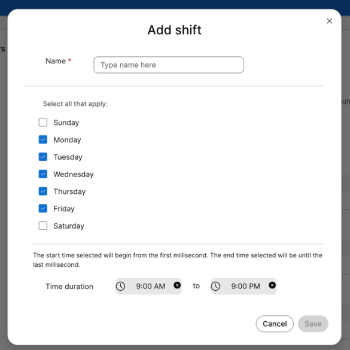
Lab 1.7 - Campaign Manager Configuration¶
Open the Webex Campaign Management portal. On first login, you will see the welcome screen outlining all the administration areas to configure before launching campaigns.
{kind=link}
Complete each section in order as described below.
Business Days¶
Business days are synced from Control Hub. In Campaign Manager, you can only toggle each day on or off — you cannot define shift times here.
Configure Business Days
- In Campaign Manager, navigate to Voice campaigns administration → Business days.
- Enable Monday through Friday by toggling each day to Business day.
- Leave Saturday and Sunday as Non-business day.
{kind=link}
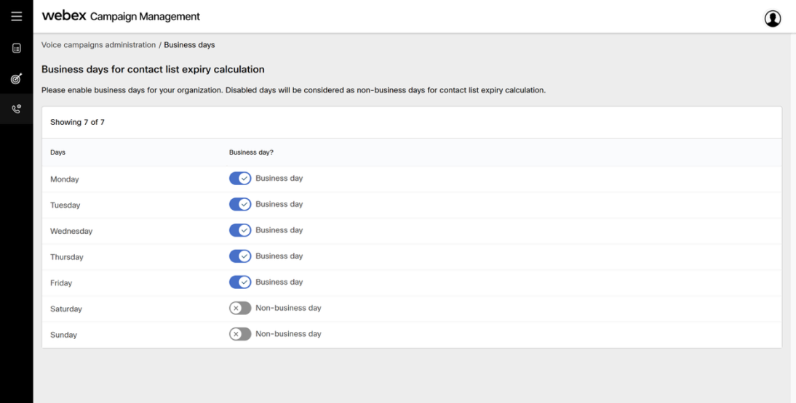
Contact Modes¶
Contact modes define the type of phone number in your contact list (e.g. Home, Office, Mobile). For this lab, we use a single contact mode mapped to the phoneNumber column in the CSV.
Create Contact Mode
- Navigate to Voice campaigns administration → Contact modes.
-
Click Create contact mode and fill in:
Field Value Contact mode name phoneContact mode type VoiceDescription (optional) Minimum length 7Maximum length 15 -
Click Create contact mode.
{kind=link}
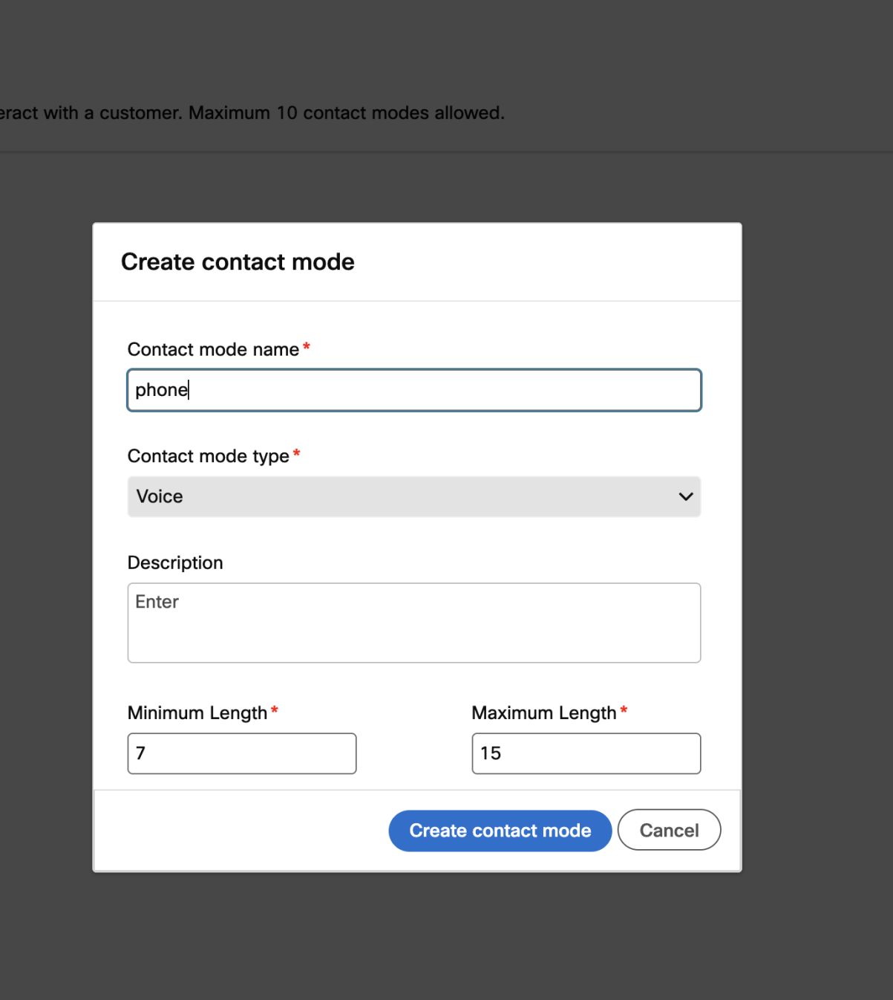
DNC Lists¶
Do Not Contact (DNC) lists prevent the campaign from calling restricted numbers. For this lab, no DNC list will be configured.
Info
In production environments, you would upload DNC lists here to comply with regulatory requirements (e.g., national DNC registries). The campaign engine automatically suppresses any contacts matched against active DNC lists.
Global Variables¶
Global variables are synced from Control Hub. They appear here for informational purposes — you cannot create or modify them in Campaign Manager.
Verify Global Variables
- Navigate to Voice campaigns administration → Global variables.
- Verify that
firstNameandlastNameare listed with Status: Active and Agent view: Yes.
Important
Before you can use Global Variables in Campaign Manager, you must designate a customer-unique-identifier and account-unique-identifier for compliance with call attempt regulations. For this lab, since we are not configuring unique identifiers, this step is skipped.
{kind=link}
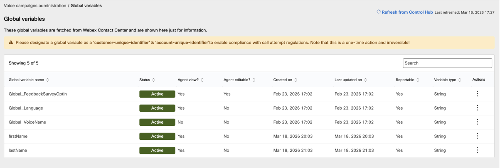
Field Mappings¶
Field mappings define how the columns in your CSV contact list map to the Campaign Manager's dialler system — including which column contains the phone number, which global variables carry the customer name, and the data types.
Prepare the Contact List CSV¶
Before creating the field mapping, create your contact list file.
Create Contact List CSV
Create a CSV file named contact_list_bootcamp.csv with the following header structure:
Note
- All phone numbers must use the E.164 format with the
+prefix and country code (e.g.+442012345678). - All rows within a single file must use numbers from the same country.
- Spaces, hyphens, or other special characters in phone numbers are not permitted.
{kind=link}
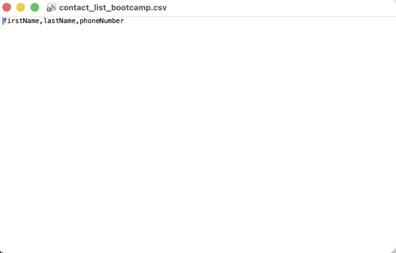
Create the Field Mapping¶
Create Field Mapping
- Navigate to Voice campaigns administration → Field mappings.
- Click Create field mapping.
- Enter a Field mapping name:
Bootcamp_field_mapping
Step 1 — Upload sample file:
Click Choose file and select your contact_list_bootcamp.csv. Once uploaded, the system displays the detected headers: firstName, lastName, phoneNumber.
{kind=link}
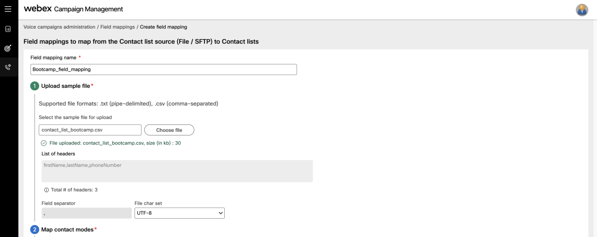
Step 2 — Map contact modes:
In the Map contact modes section, map the phoneNumber column to the Phone contact mode you created earlier. Leave firstName and lastName as Unmapped at this stage.
{kind=link}
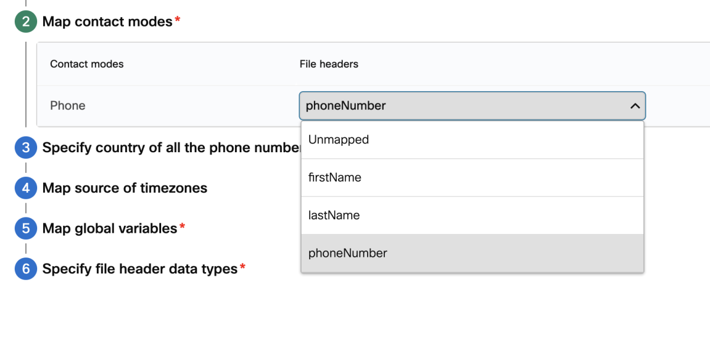
Step 3 — Specify country of all phone numbers:
Select United Kingdom +44 (or the appropriate country for your numbers) and set the format to:
Prefixed with + sign and country code i.e. '+<country code><phone number>'
{kind=link}
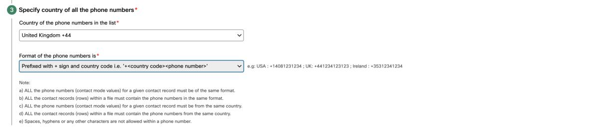
Step 4 — Map source of timezones:
Keep the default configuration.
Step 5 — Map global variables:
Map each CSV column to the corresponding Global Variable:
| File header | Global variable | Data type |
|---|---|---|
firstName |
firstName |
String |
lastName |
lastName |
String |
phoneNumber |
Unmapped | N/A |
{kind=link}
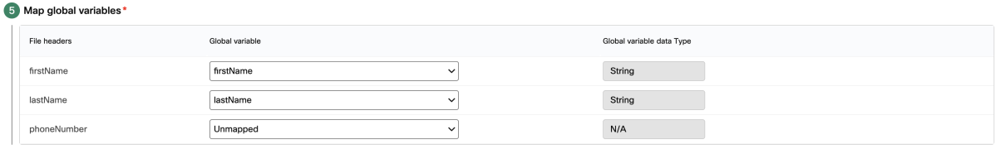
Step 6 — Specify file header data types:
Leave all columns as String data type. Enable PII protection for phoneNumber if required by your organisation's data handling policies.
{kind=link}
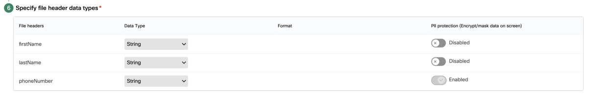
Click Save to finalise the field mapping.
Org Exclusion Dates¶
Organisation-level exclusion dates prevent campaigns from running on specific dates (e.g. national holidays). These exclusions apply to all campaigns in the organisation.
Create Org Exclusion Date
- Navigate to Voice campaigns administration → Org exclusion dates.
-
Click Create exclusion date and add:
Exclusion date Comment Dec 31, 2026End of the Year -
Click Save.
{kind=link}
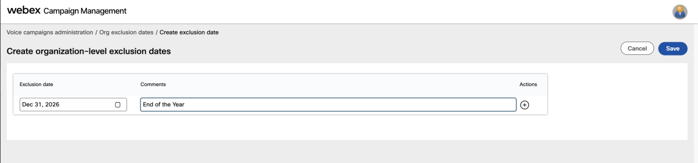
Info
When a campaign is running and an exclusion date is reached, the campaign status automatically changes to Pending and calling stops. Once the exclusion date passes, the campaign automatically resumes with Running status.
Purpose Meta-tags¶
Purpose meta-tags allow you to categorise campaigns by business function. They are mandatory for campaign activation (though not required to save a campaign in draft).
Create Purpose Meta-tag
- Navigate to Voice campaigns administration → P-tags (Purpose meta-tags).
- Click Create purpose meta-tag and configure:
- Purpose meta-tag:
debt - Purpose meta-tag group:
DEFAULT
- Purpose meta-tag:
- Click Update purpose meta-tag.
{kind=link}
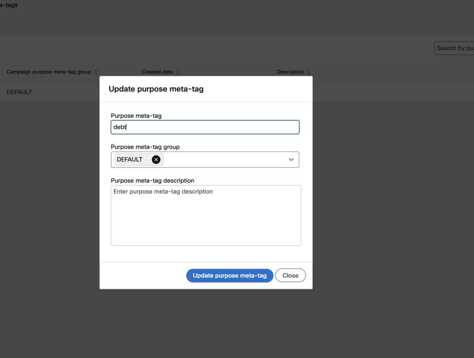
P&L Meta-tags¶
P&L (Profit and Loss) meta-tags allow campaigns to be assigned to different business divisions or cost centres. Like purpose meta-tags, they are mandatory for campaign activation.
Create P&L Meta-tag
- Navigate to Voice campaigns administration → P&L meta-tags.
- Click Create P&L meta-tag and configure:
- P&L meta-tag name:
debt - P&L meta-tag description:
Debt Department
- P&L meta-tag name:
- Click Save P&L meta-tag.
{kind=link}
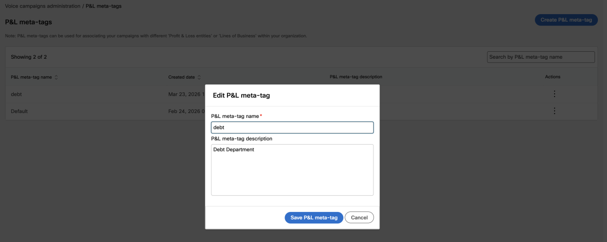
Suppression Rules¶
Suppression rules prevent calls from being made to contacts during restricted time windows or under other compliance conditions. They are evaluated before each call attempt.
Create Suppression Rule Set and Rule
Step 1 — Create the rule set:
- Navigate to Voice campaigns administration → Suppression rule sets.
- Click Create suppression rule set.
- Enter the name:
Bootcamp_rule - Click Save rule set.
{kind=link}
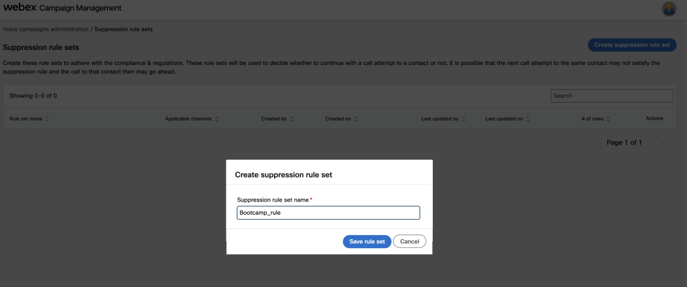
Once saved, the rule set appears in the list. Click the ⋮ Actions menu on the Bootcamp_rule row to access the option to create a rule within it.
{kind=link}
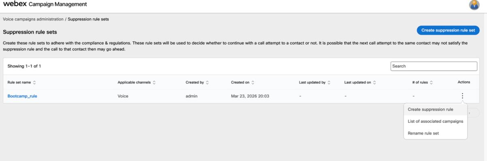
Step 2 — Create the rule under the set:
- Click on the Bootcamp_rule set.
-
Click Create suppression rule and configure:
Field Value Rule name Bootcamp_rule1Description Bootcamp_rule1Suppression rule based on Contact attempt timing windowApplicable channels Voice -
Under Suppress contact attempts to customers who satisfy the following conditions, add:
- Current time (24hr format) in call recipient's timezone is less than**
7hr(s)0min(s) - OR Current time (24hr format) in call recipient's timezone is greater than**
23hr(s)0min(s)
- Current time (24hr format) in call recipient's timezone is less than**
-
Click Create.
{kind=link}
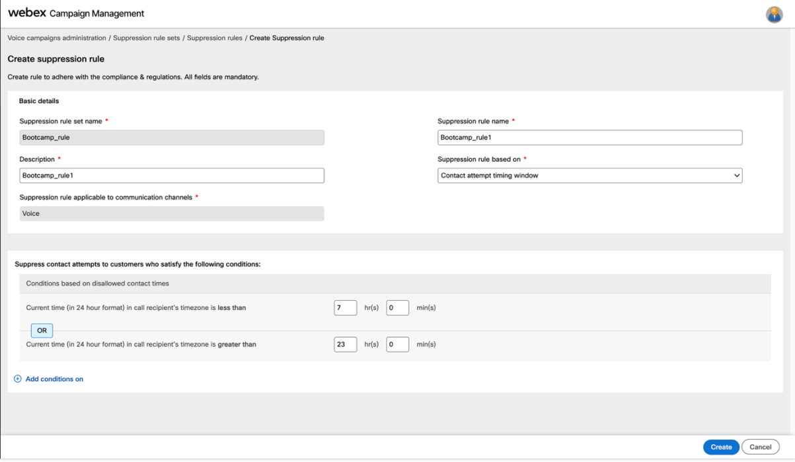
Tip
This rule ensures the campaign never dials contacts during overnight hours, protecting both customer experience and regulatory compliance.
Telephony Outcomes¶
A telephony outcome set defines how each possible call result (Busy, No Answer, AMD, etc.) is treated by the campaign — including whether it counts as a contact attempt and how long to wait before retrying.
The system provides a primary (read-only) outcome set. You must duplicate it to create a configurable version for your campaign.
Duplicate Telephony Outcome Set
- Navigate to Voice campaigns administration → Telephony outcome sets.
- On the
Primary_telephony_outcome_setrow, click the ⋮ Actions menu and select Duplicate. - Enter the new name:
Bootcamp_Primary_telephony_outcome_set - Click Duplicate.
{kind=link}
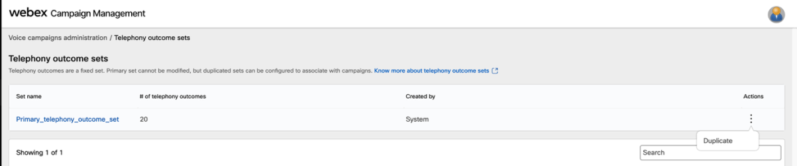
{kind=link}
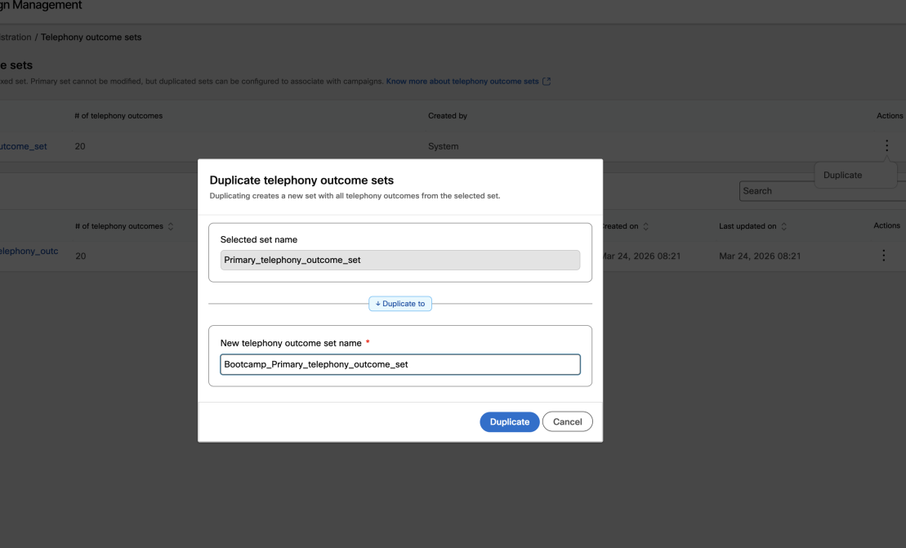
The duplicated set will appear in your list. You can click on it to view all 20 telephony outcomes. For this bootcamp, leave all outcome values at their defaults.
{kind=link}
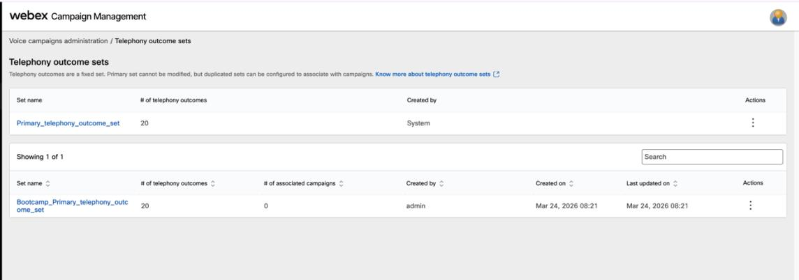
UI Users¶
Webex Campaign Management uses just-in-time (JIT) provisioning — user accounts are created automatically the first time a user logs in, based on their role in Control Hub. No manual user creation is required in Campaign Manager.
{kind=link}
For more information, refer to the Campaign Management UI Users documentation.
Wrap-up Code Sets¶
Wrap-up codes defined in Control Hub are synced to Campaign Manager. You can configure how each code affects future campaign contact attempts (e.g. whether a contact with a given wrap-up code should be retried).
Configure Wrap-up Code Set
- Navigate to Voice campaigns administration → Wrap-up code sets. Create a new set.
{kind=link}
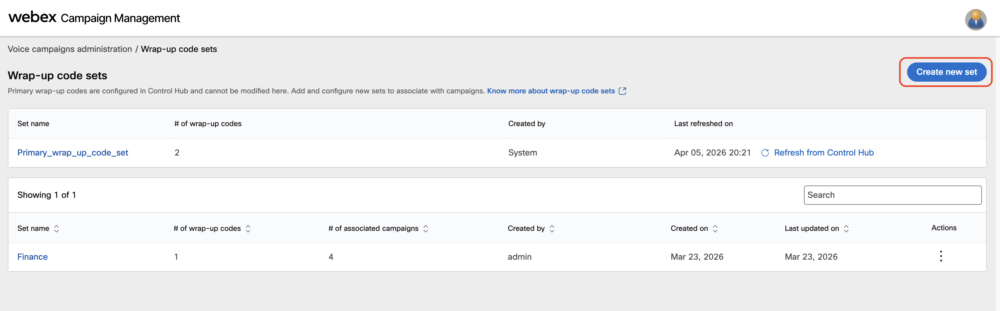
{kind=link}
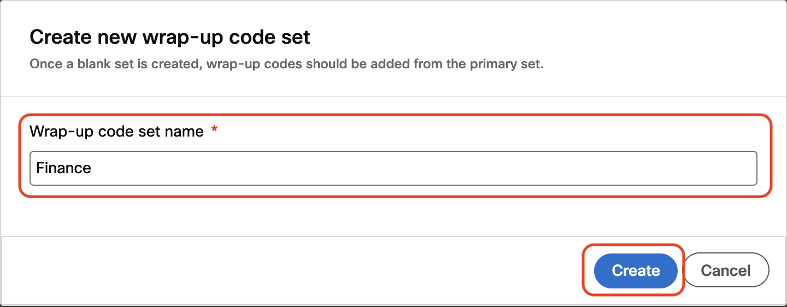
- Click on the new set and then Add wrap-up codes Locate the wrap-up codes synced from Control Hub. The
debtwrap-up code created earlier should appear, selecet it.

{kind=link}
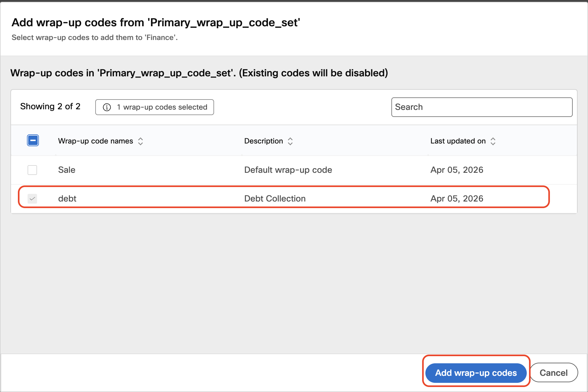
For more information, refer to the Wrap-up code sets documentation.
Lab 1.8 - Campaign Management¶
With all prerequisites in place, you are ready to create the campaign group, configure the campaign, and activate it.
Create a Campaign Group¶
A campaign group is a container (wrapper) for one or more campaigns. You must create the group first before creating any campaigns inside it.
Create Campaign Group
- In Campaign Manager, navigate to Campaign management → Campaign groups.
- Click Create campaign group and enter:
- Campaign group name:
Bootcamp2026 - (All other fields are optional)
- Campaign group name:
- Click Save & proceed.
{kind=link}
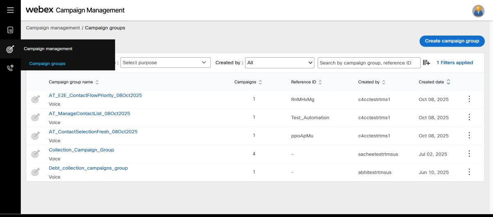
<figure markdown>
{kind=link}
Create and Configure the Campaign¶
Create Campaign
- Click on the Bootcamp2026 campaign group.
- Click Create campaign in the top-right corner.
- An untitled campaign opens with a visual node-based configuration canvas. Work through each node from left to right.
{kind=link}
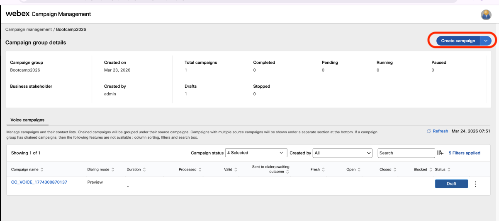
Node 1 — Dialer configuration:
Configure Dialer
In the Dialer configuration panel on the right side:
| Field | Value |
|---|---|
| Control Hub channel | Campaign_EP |
| Outdial ANI | +442046200604 (select your PSTN ANI) |
| Dialing mode | Progressive IVR |
| CPA parameters | Enabled (leave defaults) |
| # of contacts to be sent to the dialer in each push | 100 |
Click Save changes.
{kind=link}
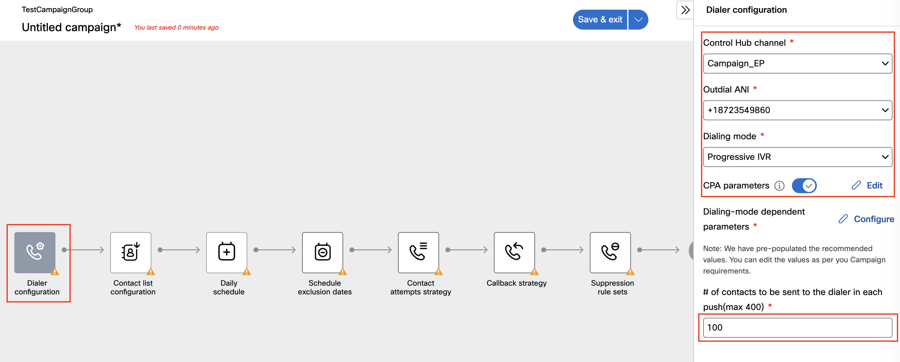
Node 2 — Contact list source:
Configure Contact List Source
- Click the Contact list source node.
- Set Select contact list source to
Manual file upload. - Set Select field mapping to
Bootcamp_field_mapping. - Click Save changes.
Note
The actual contact list file will be uploaded after the campaign is activated. For now, just associate the field mapping.
{kind=link}
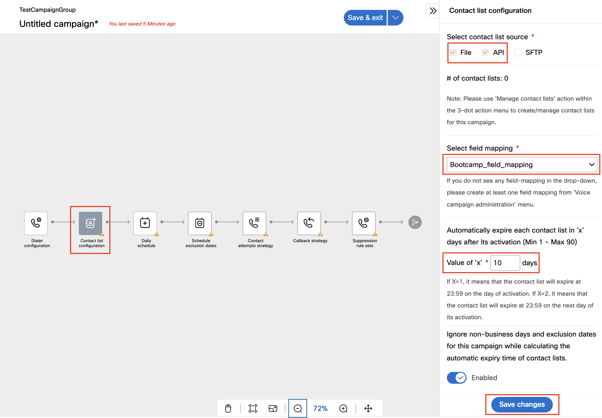
Node 3 — Daily schedule:
Configure Daily Schedule
- Click the Daily schedule node.
- Configure the calling window using your local timezone.
- A typical bootcamp schedule runs:
- Start time:
09:00 - End time:
21:00
- Start time:
- Click Save changes.
{kind=link}
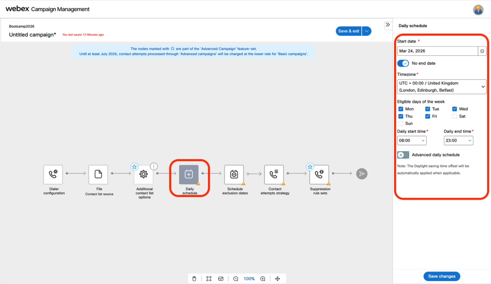
Node 4 — Schedule exclusion dates:
Configure Exclusion Dates
- Click the Schedule exclusion dates node.
- Under Organisation-level exclusion dates, the
End of the Year (Dec 31, 2026)date you created earlier should appear automatically. - Leave it checked (enabled).
- Click Save changes.
{kind=link}
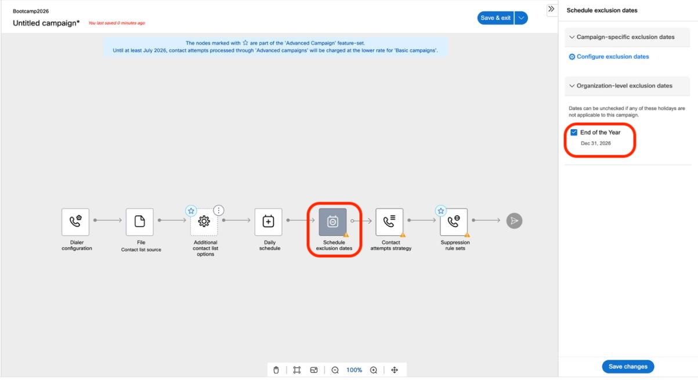
Node 5 — Contact attempts strategy:
Configure Contact Attempt Strategy
- Click the Contact attempts strategy node, then click Configure.
- Configure the following sections:
Section 1 — Call outcome sets:
| Field | Value |
|---|---|
| Wrap-up code set | Finance (with 1 wrap-up code) |
| Telephony outcome set | Bootcamp_Primary_telephony_outcome_set |
Section 2 — Contact mode priority:
The Phone contact mode should be pre-populated from your field mapping. Leave priority at 1.
Section 3 — Max call attempts:
| Timeframe | Max call attempts |
|---|---|
| Until the contact list expires | 40 |
| In 1 day (from 00:01 to 23:59) | 4 |
Section 4 — Sequential dialling:
Disable sequential dialling and set the amount of contact to 10.
{kind=link}
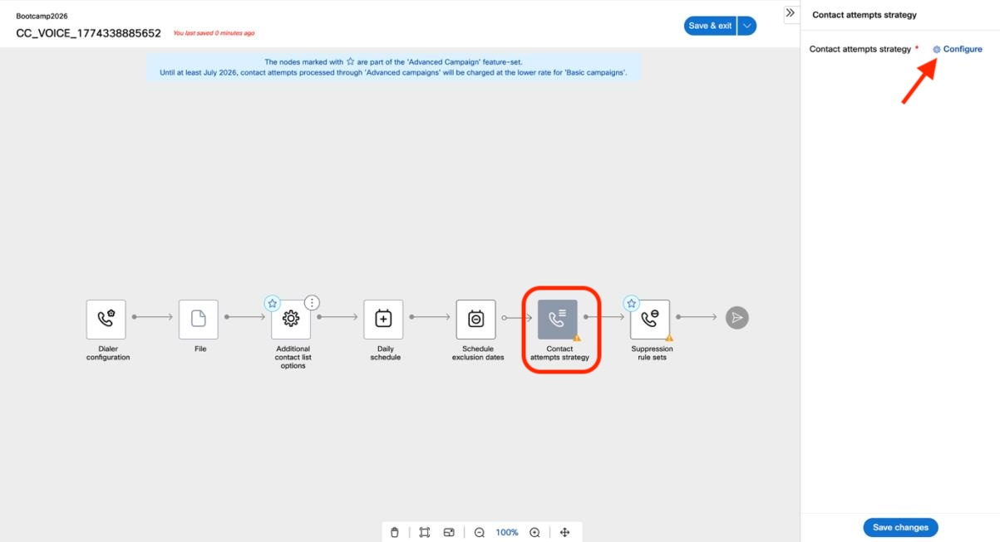
{kind=link}
- Click Save.
Node 6 — Suppression rule sets:
Configure Suppression Rules
- Click the Suppression rule sets node.
- Under Suppression rule sets, select
Bootcamp_rule(which includesBootcamp_rule1). - Click Save changes.
{kind=link}
Save and Activate the Campaign¶
Save Campaign
- Click Save & exit (top right of the campaign canvas).
- In the Save campaign dialog, fill in:
- Campaign name:
Bootcamp_campaign - P&L meta-tag:
debt - Purpose meta-tag:
debt - Applicable DNC lists:
None
- Campaign name:
- Click Save.
{kind=link}
Activate Campaign
- Back in the Campaign group list, locate Bootcamp_campaign (status: Draft).
- Click the ⋮ Actions menu and select Activate.
- In the confirmation dialog, click Confirm.
The campaign status will change to Running.
{kind=link}
Lab 1.9 - Upload Contact List and Test¶
Upload the Contact List¶
Now that the campaign is active, upload your contact list CSV to trigger the outbound calls.
Upload Contact List
- In the campaign list, click the ⋮ Actions menu on Bootcamp_campaign and select Manage contact lists.
- Click Upload file to create contact list.
- In the Contact list from file upload dialog:
- Supported channels: Voice (pre-selected)
- Contact list type: Static
- Field mapping:
Bootcamp_field_mapping(pre-selected) - Click Browse and select your
contact_list_bootcamp.csv - Automatically activate: Immediately after upload
- In case of record issues: Skip the particular record
- Click Save and proceed.
{kind=link}
{kind=link}
{kind=link}
Monitor Upload Status¶
After uploading, the contact list will show a status of Uploading, then transition to Active once processed.
{kind=link}
{kind=link}
Warning
If your contact list fails to upload, the most likely cause is a formatting issue with the CSV file. Check that:
- The column headers match exactly what was defined in the field mapping (
firstName,lastName,phoneNumber) - Phone numbers use E.164 format with the
+prefix (e.g.+442012345678) - All phone numbers in the file are from the same country
- No spaces, hyphens, or special characters appear in the phone number field
- The file is saved as a proper comma-separated CSV (not semicolon or tab-separated)
Verify the Campaign is Running¶
Once the contact list is active, the Campaign Manager will begin pushing contacts to the dialler. Allow 2–5 minutes for the first calls to be generated.
If everything is configured correctly, you will receive a call on the phone number specified in your contact list. When you answer, you will hear:
"Congratulations, You have completed lab 1"
This confirms that the full end-to-end flow is working — from Campaign Manager initiating the call, through the CPA detection identifying a live voice, routing through the Go To node, and arriving at the Lab1_completed flow which plays the TTS message.
Lab Completion ✅¶
At this point, you have successfully:
- Configured an agent, team, and outdial queue in Webex Contact Center
- Created
firstNameandlastNameGlobal Variables for customer data propagation - Built the
Lab1_completedtest flow with a congratulatory TTS message - Built the
Outbound_DebtCollectioncampaign flow with CPA-based routing (AMD, Abandoned, Live Voice) - Configured the outdial Entry Point (Channel) and Outdial ANI
- Set up Business Hours in Control Hub
- Completed all Campaign Manager prerequisites (business days, contact modes, field mappings, suppression rules, telephony outcomes, wrap-up codes, meta-tags)
- Created, configured, and activated the
Bootcamp_campaignProgressive IVR campaign - Uploaded a contact list and received a live test call
Congratulations! You have completed Lab 1. The outbound campaign infrastructure is fully operational and ready to connect to the AI Agent in Lab 2.